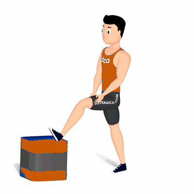

Bíceps Femoral

Alongamento para os músculos posteriores de coxa, com enfoque aos bíceps femoral. Preparando-o para a atividade física.
Ficha Técnica
Tipo: Alongamento
Grupo Muscular: Perna
Aparelho: Nenhum
Músculos: Nenhum
Como realizar
- Na posição em pé, próximo ao um espaldar, manter a coluna reta;
- Posicione um dos calcanhares na barra do espalda;
- Na tentativa de deixar a perna completamente estendia em um angulo de 90 graus com relação ao solo;
- Manter nessa posição entre 20 a 30 segundos ou, conforme o tempo orientado pelo professor;
- Após isso, altere para a outra perna, repita os movimentos.
 RC STORE
RC STORE